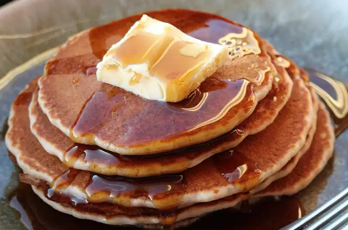

Buckwheat Pancakes

Description
Pancakes just taste better when they're made from scratch, and these better-for-you whole-grain pancake recipes made
with buckwheat are no exception! Buckwheat pancakes have a rich nutty flavor, light texture, and are packed with
vitamins, minerals, and fiber, too. Choose from fluffy overnight sourdough buckwheat pancakes, savory buckwheat
blinis, blueberry banana buckwheat pancakes, and more. They're a great choice for anyone following a gluten-free,
vegetarian diet.
Ingredients
- ½ cup whole wheat flour
- ¼ cup buckwheat flour
- ¼ cup all-purpose flour
- ¼ cup quick cooking oats
- 3 teaspoons baking powder
- 1 cup skim milk
- 3 tablespoons safflower oil
- 2 tablespoons honey
- 1 egg, lightly beaten
Steps
- In a large bowl, stir together wheat flour, buckwheat flour, all-purpose flour, oats, and baking powder.
Stir in milk, oil, honey, and egg.
- Heat a lightly oiled griddle or frying pan over medium heat. Pour or scoop the batter onto the griddle,
using approximately 1/4 cup for each pancake. Brown on both sides, and serve hot.